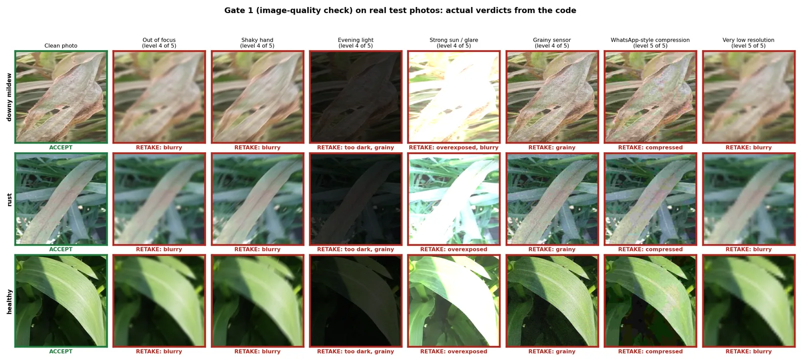
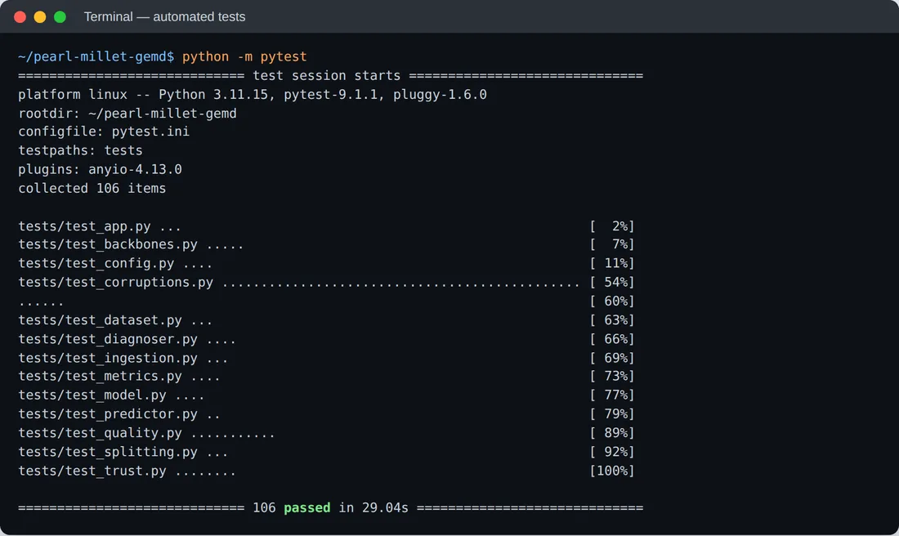
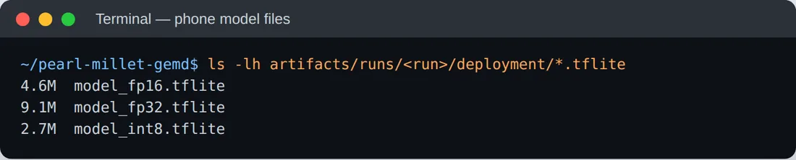
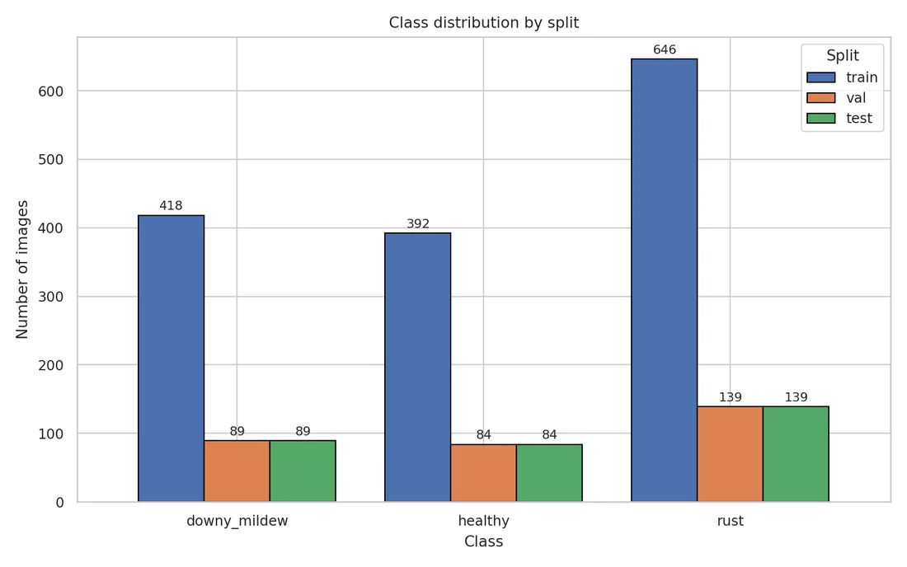

A phone-sized CNN that diagnoses downy mildew (Green Ear Disease) from a farmer's photo,
shows why with Grad-CAM, and refuses to guess when the photo is too poor or
the model is unsure.
Python · TensorFlow 2.15MobileNetV2 transfer learningGrad-CAMTFLite FP32 / FP16 / INT8Streamlitpytest🔒 Code private until publication
Results
Held-out test set: 312 photos the model never saw
98.4%
Accuracy (307 / 312)
98.2%
Macro F1-score
0.999
ROC-AUC (one-vs-rest)
2.7 MB
INT8 model for offline phones
3 classes: healthy, downy mildew, rust. Downy-mildew recall 95.5% (85 / 89). Frozen ImageNet
backbone with only 164K trainable parameters.
The problem
Accurate in the lab is not enough in the field
Downy mildew is diagnosed by eye, which is slow and unavailable to many farmers. Most plant-disease models
report high accuracy on clean images, then quietly give confident wrong answers on real phone photos:
blurry, dark, over-exposed or compressed by WhatsApp. For a farmer, a confident wrong answer is worse
than no answer.
Before the model runs, the photo is checked for blur, noise, compression, exposure and whether a leaf
is actually in frame. Thresholds are set by where the model's accuracy drops, not by arbitrary rules.
Gate 2
Calibrated confidence
Temperature scaling makes the confidence honest, and the system abstains below a threshold chosen to hit a
target accuracy on the answers it does give.
Gate 3
Grad-CAM evidence check
Grad-CAM is turned from a picture into a number: if the model isn't looking at the leaf, the answer is
not trusted, even if confidence is high.
Gate 1 in action
Real test photos, real verdicts from the code
Clean photos pass. Degraded versions of the same photo get a specific "retake" instruction the farmer can act on.

Each row is one class; each column is a smartphone-style degradation at level 4–5 of 5.
Share of photos asked to be retaken, by degradation and severity.
Engineering
Built like a product, not a notebook
Leakage-safe data: the public dataset was pre-augmented 3×, which leaks copies of one photo into
both train and test. I regenerated the raw version and used stratified, disjoint splits.
Reproducible: one validated config, seeded runs, and a self-describing artifact folder per run.
Deployable: TFLite export at FP32 (9.1 MB), FP16 (4.6 MB) and INT8 (2.7 MB) with measured
size, latency and accuracy trade-offs.
Tested: 106 automated tests covering data, model, trust gates, predictor and the Streamlit UI,
running on synthetic fixtures with no real data needed.
Usable: Streamlit app with diagnosis, confidence, per-class probabilities and Grad-CAM overlay.

Full test suite passing.

Exported phone models.
Data
2,080 leaf images, 3 classes
Public Roboflow Universe pearl millet dataset (CC BY 4.0), regenerated without augmentation; 70 / 15 / 15
stratified split with balanced class weights for the rust-heavy imbalance.

Research
Status
M.Tech dissertation, Sharda University (supervisor: Prof. (Dr.) Sandeep Gupta).
Related paper: Deep Learning Approaches for Early Detection of Downy Mildew in Pearl Millet: A Comparative CNN Study (under review).
Paper on the trust-aware method in preparation. The source code will be released after publication.
For recruiters & reviewers
Want to see the code?
The repository is private until the paper is published. I'm happy to
give read access to hiring teams, or walk through it live on a call.